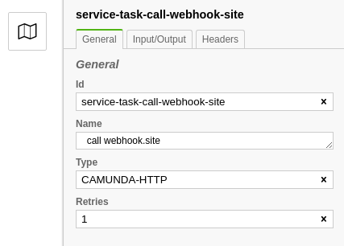
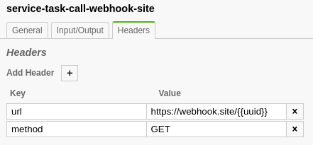
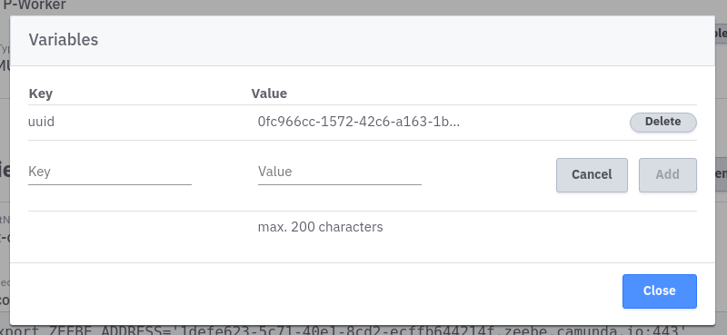

Embedded HTTP Worker
Worker
For each Zeebe cluster, an HTTP worker is provisioned, that is automatically connected to Zeebe. This worker can be used to execute HTTP requests without having to provide a separate worker to process the corresponding jobs.
For this purpose the officially offered Java HTTP Worker is provided.
Usage
To be able to use the embedded HTTP Worker two places in the workflow have to be configured. Open the Zeebe Modeler, create a new workflow (or open an existing one) and add a service task to the workflow.
Now select the Service Task. On the right side you will find the property panel. The job type must be configured there, which is for the embedded worker CAMUNDA-HTTP. All jobs of this type are processed by the embedded worker.

Additionally, you can configure what the Service Task should be called and how often the step should be retried if it fails.
Now the actual HTTP request must be configured. Two parameters are required for this. Switch to the tab Headers:
url: URL of the HTTP endpointmethod: request type (GET,POST,PATCH, ...)

Worker Variables
The parameters configured above are stored in the corresponding BPMN definition. There are values that may change or are dynamic, and you may not want to store them in the BPMN model. An example would be the URL for different environments. The workflow itself is identical everywhere, but the HTTP endpoints are different:
For such cases the Camunda Cloud Worker offers variables that can be substituted by the worker. Switch to the cluster detail view and search for the section Worker Variables. Add a new variable:
Key: this value is entered into the BPMN modelValue: the worker replaces the key with this value
Keys must be unique.

Worker variables are exchanged with the help of mustache, i.e. they must be included in the workflow definition in the form {{key}}.
For the example above, the header parameter URL looks like this:
https://{{stage}}.myserviceurl.io/api/